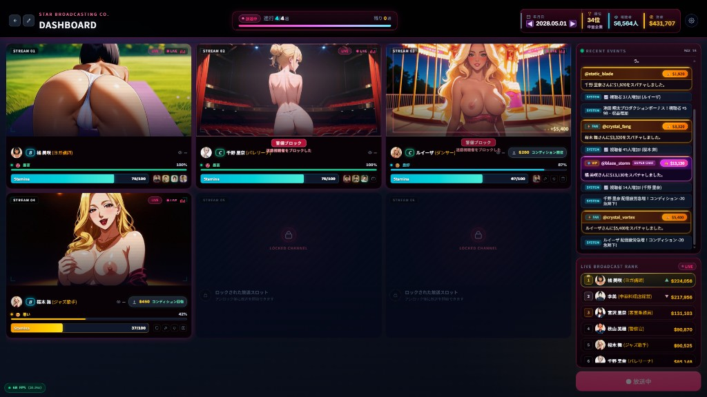
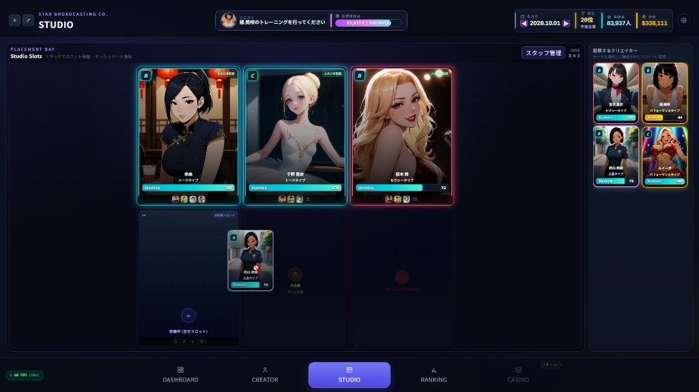
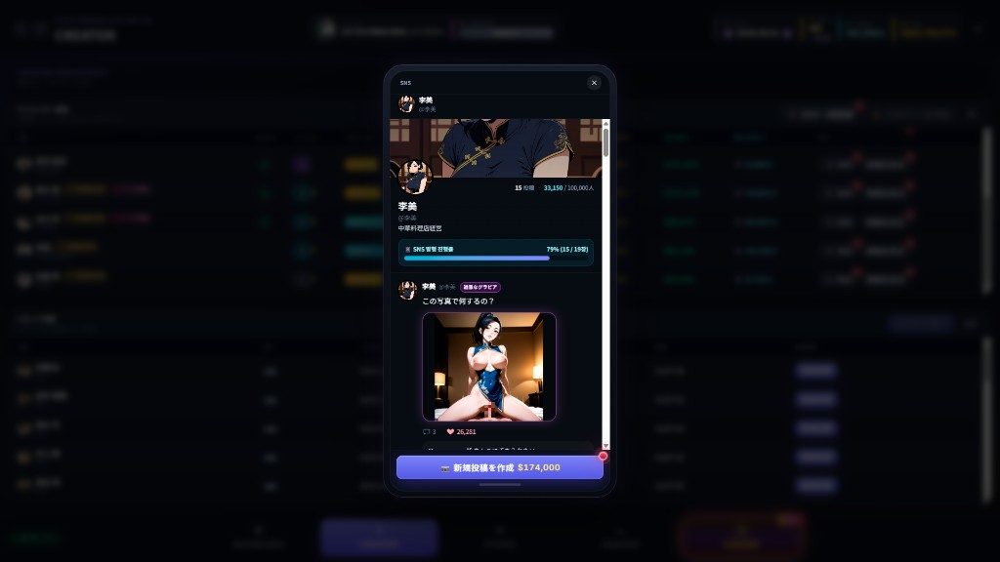
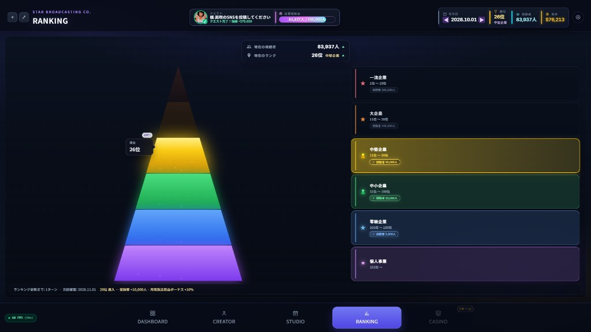
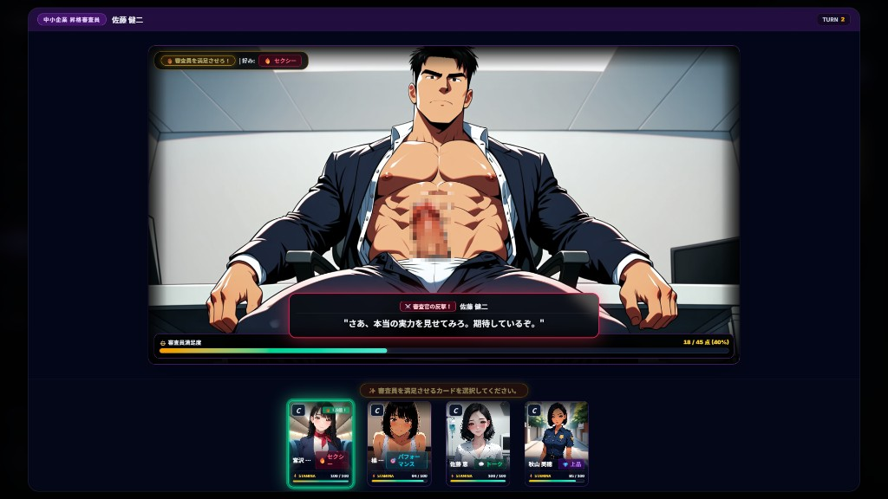
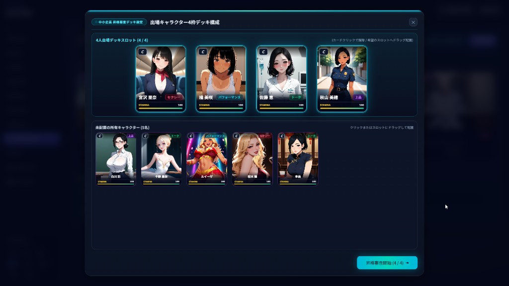
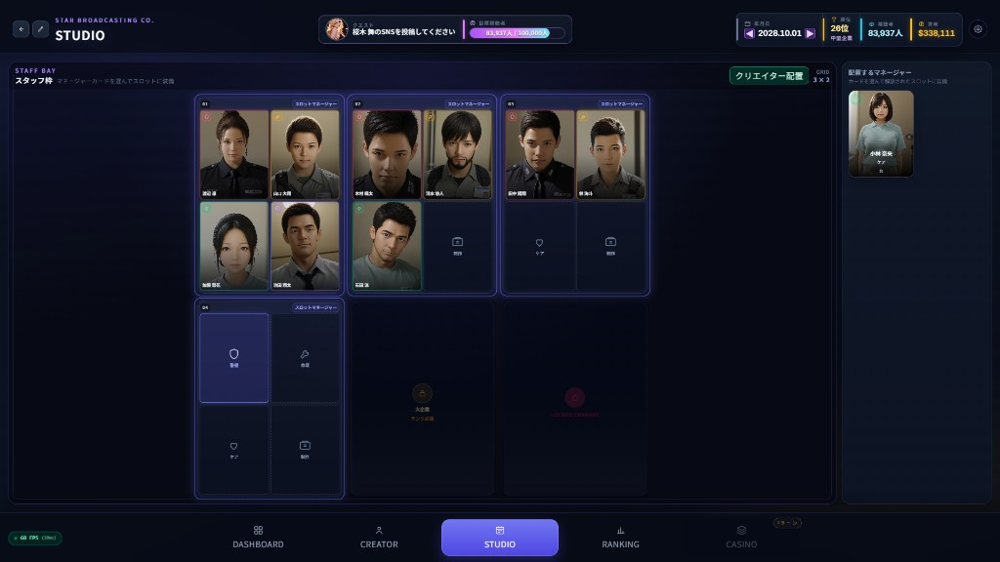

VISUAL GUIDE
Screenshots / 画面紹介 / 화면 소개
本マニュアルで参照する主要画面です。各言語説明は同じ番号を指します。

Fig.01 — LIVE BROADCAST / 配信中ダッシュボード / 방송 중 대시보드

Fig.02 — STUDIO SLOTS / スタジオ配置 / 스튜디오 슬롯

Fig.03 — SNS PROMOTION / SNS投稿 / SNS 홍보

Fig.04 — STATION RANKING / 放送局ランキング / 방송국 등급·랭킹
Fig.05 — DATE / VN EVENT / デートイベント / 데이트 VN

Fig.06 — PROMOTION EXAM / 昇格審査 / 승급 심사

Fig.07 — EXAM DECK / 審査デッキ編成 / 심사 카드 덱

Fig.08 — STAFF BAY / スタッフ配置 / 스태프 배치
日本語
プレイマニュアル
美少女クリエイターをスカウトし、視聴者を集め、放送局を「一流企業（トップランク）」へ育てる経営シミュレーションです。
最終目標： 個人事業からスタートし、視聴者数を伸ばしてランキングを上げ、最終的に一流企業（上位ランク）の美少女アダルト放送局を築くこと。
1. 起動方法
- 配布されたゲーム実行ファイルを起動します（Windows）。
- ロゴ画面のあと、メインメニューが表示されます。
- NEW GAME で新規開始、LOAD でセーブデータを読み込みます。
- 言語は設定から切り替え可能です（日本語 / English / 한국어 ほか）。
2. 基本操作
- 操作は主にマウス（クリック / ドラッグ＆ドロップ）です。
- 画面下部タブで主要メニューを切り替えます：DASHBOARD / CREATOR / STUDIO / RANKING など。
- モーダル（SNS・審査・デートなど）は画面上のボタンやクエスト案内から開けます。
- 音量は設定、または各イベント画面のスライダーで調整できます。
3. コア・ループ（進め方）
- スカウト：美少女クリエイターを獲得する。
- スタジオ配置：スロットに配置して配信枠を確保する（Fig.02）。
- 放送運営：同時配信で視聴者・売上を伸ばす（Fig.01）。
- 育成 / SNS：コンディション管理とSNS投稿で人気を上げる（Fig.03）。
- ランク上昇：視聴者目標を達成し企業ランクを上げる（Fig.04）。
- 昇格審査：必要時にデッキを組んで審査を突破する（Fig.06–07）。
- 繰り返し成長し、一流企業を目指す。
4. システム解説
4.1 配信中ダッシュボード（Fig.01）
最大6枠のチャンネルで美少女たちの生放送を同時運営します。スタミナ・コンディション・スーパーチャット・警備ブロックなどを確認しながら進行します。画面右のライブランキングで収益順も把握できます。
4.2 スタジオオ・スロット（Fig.02）
獲得したクリエイターを配置ベイにドラッグして配信枠へ割り当てます。企業ランクが上がるとロックされたスロットが解放され、同時配信数を増やせます。タイプ（セクシー / パフォーマンス / トーク / 上品）も確認しましょう。
4.3 SNS（Fig.03）
資金を使って投稿を作成し、フォロワーと注目度を伸ばします。過激グラビアなど投稿タイプがあり、育成・ランクアップの重要な推進力になります。
4.4 放送局ランキング（Fig.04）
個人事業 → 零細 → 中小 → 中堅 → 大企業 → 一流企業。視聴者数に応じて順位が変動します。上位ランクほど枠解放や収益ボーナスが強くなります。
4.5 デート / VN（Fig.05）
親密度を高めるデートイベント（ビジュアルノベル形式）。選択肢と進行で関係が深まり、育成・ストーリー面の報酬につながります。
4.6 昇格審査（Fig.06）
審査員の好み（例：セクシー）に合わせてカードを出し、満足度を満たすターン制チャレンジです。突破すると企業ランク進行に大きく貢献します。
4.7 審査デッキ編成（Fig.07）
出場4枠のデッキを編成します。属性バランスを見て配置し、「昇格審査開始」で本番へ進みます。
4.8 スタッフ配置（Fig.08）
各スロットに警備 / 管理 / ケア / 制作スタッフを配置し、トラブル対応・コンディション維持・制作効率を支えます。大企業ランク到達で追加枠が開きます。
5. UIガイド（よく見る表示）
- 視聴者 / 資金 / 順位：画面上部の経営状況。
- クエストバー：次にやるべき育成・SNS・トレーニング案内。
- スタミナ / コンディション：無理な連続配置を避け、休息やケアを挟む。
- LOCKED CHANNEL：ランク条件を満たすと解放。
ENGLISH
Play Manual
Scout beautiful-girl creators, grow your audience, and build your adult broadcast station into a top-tier company.
Ultimate Goal: Start from a small operation, increase viewers and ranking, and build a top-tier (first-class) beautiful-girl adult broadcasting company.
1. How to Launch
- Run the distributed Windows game executable.
- After the logo splash, the main menu appears.
- Use NEW GAME to start fresh, or LOAD to continue a save.
- Language can be changed in Settings (Japanese / English / Korean, etc.).
2. Basic Controls
- Primarily mouse click / drag & drop.
- Bottom tabs switch major screens: DASHBOARD / CREATOR / STUDIO / RANKING, etc.
- Open SNS, exams, dates, and other systems via buttons or quest prompts.
- Adjust volume in Settings or on event screens.
3. Core Loop
- Scout beautiful-girl creators.
- Assign them to studio slots (Fig.02).
- Broadcast on up to 6 channels to grow viewers and revenue (Fig.01).
- Train / SNS to raise popularity (Fig.03).
- Climb ranks by hitting viewer targets (Fig.04).
- Pass promotion exams with a 4-card deck when required (Fig.06–07).
- Repeat until you reach a top-tier company.
4. Systems
4.1 Live Broadcast Dashboard (Fig.01)
Operate up to six live channels at once. Monitor stamina, condition, super chats, and security blocks. The live ranking panel shows earnings order.
4.2 Studio Slots (Fig.02)
Drag creators into placement bays to assign broadcast slots. Higher company ranks unlock locked channels for more simultaneous streams. Check types: Sexy / Performance / Talk / Elegant.
4.3 SNS (Fig.03)
Spend funds to create posts and grow followers. Post types (including bold gravure-style content) are a key growth engine for popularity and ranking.
4.4 Station Ranking (Fig.04)
Progress: Sole proprietorship → Micro → SME → Mid-size → Large → Top-tier. Viewer count drives rank. Higher tiers unlock slots and stronger revenue bonuses.
4.5 Date / VN (Fig.05)
Visual-novel date events deepen relationships with creators and provide story/growth rewards.
4.6 Promotion Exam (Fig.06)
A turn-based challenge: play cards matching the examiner’s preference (e.g. Sexy) to fill the satisfaction gauge and advance your company tier.
4.7 Exam Deck Setup (Fig.07)
Build a 4-character participation deck, balance attributes, then start the exam.
4.8 Staff Bay (Fig.08)
Assign Security / Management / Care / Production staff per slot to handle incidents, condition, and production efficiency. More slots unlock at Large-company rank.
5. UI Guide
- Viewers / Funds / Rank: top-bar business status.
- Quest bar: next training / SNS / growth task.
- Stamina / Condition: rotate casts and use rest/care.
- LOCKED CHANNEL: unlocks when rank requirements are met.
한국어
플레이 매뉴얼
미소녀 크리에이터를 스카우트하고 시청자를 모아, 성인 방송국을 일등기업으로 키우는 경영 시뮬레이션입니다.
최종 목표: 개인 사업에서 시작해 시청자와 순위를 끌어올리고, 최종적으로 일등기업(최고 등급) 미소녀 성인 방송국을 만드는 것.
1. 실행 방법
- 배포된 Windows 실행 파일로 게임을 시작합니다.
- 로고 화면 이후 메인 메뉴가 표시됩니다.
- NEW GAME으로 새 게임, LOAD로 세이브를 불러옵니다.
- 설정에서 언어를 변경할 수 있습니다(日本語 / English / 한국어 등).
2. 기본 조작
- 조작은 주로 마우스 클릭 / 드래그 앤 드롭입니다.
- 하단 탭으로 화면을 전환합니다: DASHBOARD / CREATOR / STUDIO / RANKING 등.
- SNS·심사·데이트 등은 버튼 또는 퀘스트 안내로 엽니다.
- 볼륨은 설정 또는 이벤트 화면 슬라이더로 조절합니다.
3. 핵심 진행 루프
- 스카우트: 미소녀 크리에이터 영입
- 스튜디오 배치: 슬롯에 배치해 방송 프레임 확보 (Fig.02)
- 방송 운영: 최대 6채널 동시 방송으로 시청자·수익 확대 (Fig.01)
- 육성 / SNS: 컨디션 관리와 게시로 인기 상승 (Fig.03)
- 랭크 상승: 시청자 목표 달성으로 기업 등급 상승 (Fig.04)
- 승급 심사: 필요 시 4인 덱으로 심사 돌파 (Fig.06–07)
- 반복 성장하여 일등기업을 목표로 합니다.
4. 시스템 설명
4.1 방송 중 대시보드 (Fig.01)
최대 6개 채널에서 미소녀들의 라이브를 동시에 운영합니다. 스태미나·컨디션·슈퍼챗·경비 블록 등을 확인하며 진행하고, 우측 라이브 랭킹으로 수익 순위를 봅니다.
4.2 스튜디오 슬롯 (Fig.02)
보유 크리에이터를 배치 베이로 드래그해 방송 슬롯에 배정합니다. 기업 등급이 오르면 잠긴 채널이 해금되어 동시 방송 수를 늘 수 있습니다. 타입(섹시/퍼포먼스/토크/우아)을 확인하세요.
4.3 SNS (Fig.03)
자금을 들여 게시물을 작성하고 팔로워·화제성을 키웁니다. 과감한 그라비아 등 게시 유형이 있으며, 육성과 랭크업의 핵심 동력이 됩니다.
4.4 방송국 등급·랭킹 (Fig.04)
개인사업 → 영세 → 중소 → 중견 → 대기업 → 일류기업. 시청자 수에 따라 순위가 변합니다. 상위 등급일수록 슬롯 해금과 수익 보너스가 강해집니다.
4.5 데이트 / VN (Fig.05)
비주얼 노벨 형식의 데이트 이벤트로 친밀도를 높이고, 스토리·육성 보상을 얻습니다.
4.6 승급 심사 (Fig.06)
심사관의 취향(예: 섹시)에 맞는 카드를 내 만족도를 채우는 턴제 챌린지입니다. 통과 시 기업 등급 진행에 크게 기여합니다.
4.7 심사 카드 덱 (Fig.07)
출전 4칸 덱을 구성하고 속성 균형을 맞춘 뒤 「승급 심사 시작」으로 본심사를 진행합니다.
4.8 스태프 배치 (Fig.08)
슬롯별로 경비 / 관리 / 케어 / 제작 스태프를 배치해 사고 대응·컨디션·제작 효율을 지원합니다. 대기업 등급에서 추가 슬롯이 열립니다.
5. UI 가이드
- 시청자 / 자금 / 순위: 상단 경영 상태
- 퀘스트 바: 다음 육성·SNS·훈련 안내
- 스태미나 / 컨디션: 무리한 연속 배치를 피하고 휴식·케어 활용
- LOCKED CHANNEL: 등급 조건 충족 시 해금